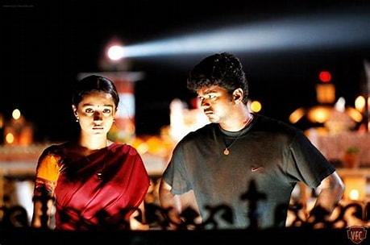

The Birthday Times
June 22, 2004
Rise as a Mass Star

By this year, Vijay had delivered several blockbuster hits like "Ghilli" (2004) and "Thirupaachi" (2005), cementing his place as a leading mass hero in Tamil cinema.